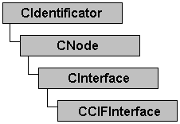

CCIFInterface
Declaration
class DNETMOD_API CCIFInterface : public CInterface
Hierarchy
Description
This class is shell for the Hilscher CIF-*DNM interface boards. It is based on CInterface class and uses CIF device drivers for Win32 and Linux.
Class members
| Construction/Destruction | |
| CCIFInterface | Constructors. |
| ~CCIFInterface | Destructor. |
| Get/Set functions | |
| GetBoardNum | Retrieves Hilscher board number. |
| SetBoardNum | Sets Hilscher board number. |
Requirements
#include "ccifintf.h"
| OS\Libraries | Static (CT) | Import library (CT) | Shared (RT) |
|---|---|---|---|
| Linux | libdnetmod.a | - | libdnetmod.so.0.2 |
| Win32 | dnetmod.lib | dnetmodimp.lib | dnetmod.dll |